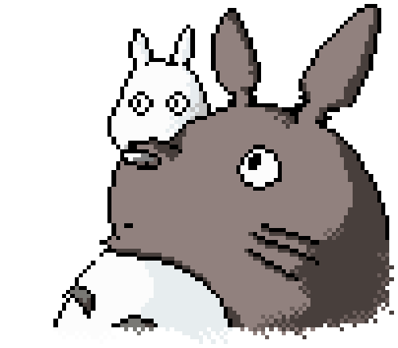
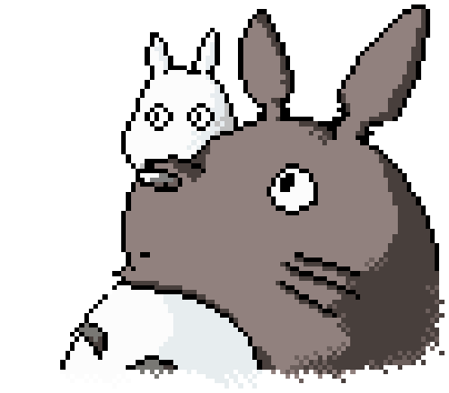

Recuerdos del ayer (1992)
(おもひでぽろぽろ Omohide Poro Poro) Taeko Okajima
es una joven asalariada de veintisiete años que pide permiso de vacaciones para poder regresar a su casa de Yamagata, el pueblo rural de su cuñada,
y donde guarda tiernos momentos. En el transcurso de su viaje a la granja de sus familiares y a su posterior estancia, Taeko irá recordando su infancia,
sus días en la escuela y otras vivencias peculiares, mientras vive intensamente su presente.
Puedo escuchar el mar (1993)
(海がきこえる Umi ga Kikoeru) Rikako Mutō es una estudiante de
Tokio que acaba de ser trasferida a uno de los institutos de Kōchi, una ciudad costera alejada de la capital, tras el divorcio de sus padres. Rikako es una joven guapa, inteligente,
buena en los estudios y en los deportes. Sin embargo, no consigue adaptarse a la vida social de la escuela. Al mismo instituto acuden Taku Morisaki y Yutaka Matsuno,
dos grandes amigos desde la secundaria, el primero de los cuales empieza a fijarse visiblemente en la joven recién llegada.
Pompoko (1994)
( 平成狸合戦ぽんぽこ Heisei
Tanuki Gassen Ponpoko) Según cuenta la tradición popular, los tanuki, una especie de mapache japonés, tienen la habilidad de transformarse en humanos
o en otras criaturas con sólo desearlo. Cuando una familia de estos animales descubre que los hombres están acabando con el bosque donde viven para construir
una nueva urbanización, se preparan para combatirlos haciendo uso de todo su poder y de sus habilidades en una guerra como nunca antes se ha visto.
Susurros del corazón (1995)
(耳をすませば Mimi wo
Sumaseba) Shizuku Tsukishima es una adolescente aficionada a la lectura que tiene como plan de vacaciones pasar todo el verano leyendo en la biblioteca y
traduciendo canciones extranjeras. Para su sorpresa, sus planes dan un giro cuando descubre que hay un mismo nombre, Seiji Amasawa, en las fichas de los libros que
coge en la biblioteca. Un día en el tren, se encuentra con un gato misterioso que le llevará a la tienda donde Seiji trabaja como aprendiz de luthier. Seiji le cuenta
a Shizuku que su sueño es ir a Cremona, Italia, donde aprenderá mejor la técnica de elaboración de violines. También le anima a realizar su sueño, escribir libros.
A partir de entonces, Shizuku y Seiji se prometen que estarán siempre juntos.
La princesa Mononoke (1997)
(もののけ姫
Mononoke Hime )Ambientada en un Japón del período Muromachi, con el fin de curar la herida que le ha causado un jabalí enloquecido, el joven Ashitaka
sale en busca del dios Ciervo, pues sólo él puede liberarlo del sortilegio. A lo largo de su periplo descubre cómo los animales del bosque luchan contra
hombres que están dispuestos a destruir la Naturaleza.
Mis vecinos los Yamada (1999)
(ホーホケキョ
となりの山田くん Hōhokekyo Tonari no Yamada-kun)A modo de tiras cómicas, la película muestra la rutina, las aventuras, la vida de una familia típica de
clase media japonesa. La familia Yamada que está compuesta por Takashi, el padre; Matsuko, la madre; Shige, la abuela; Noboru, el hijo mayor; Nonoko, la
hija menor, y Pochi, el perro de la familia.